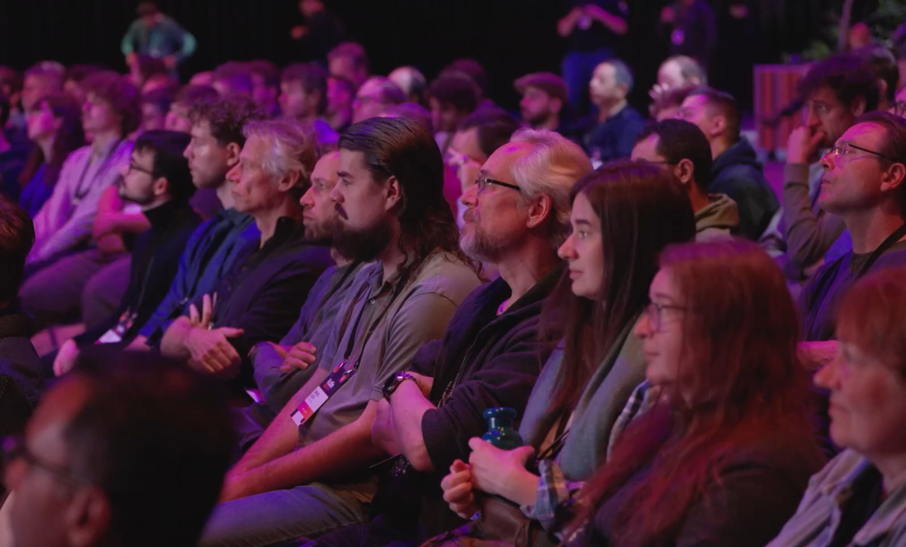
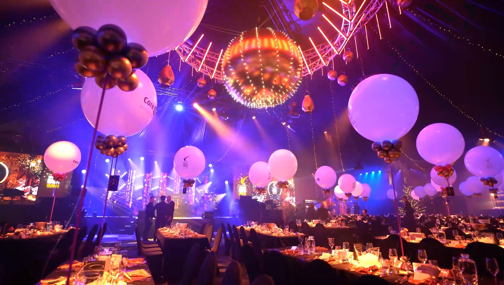
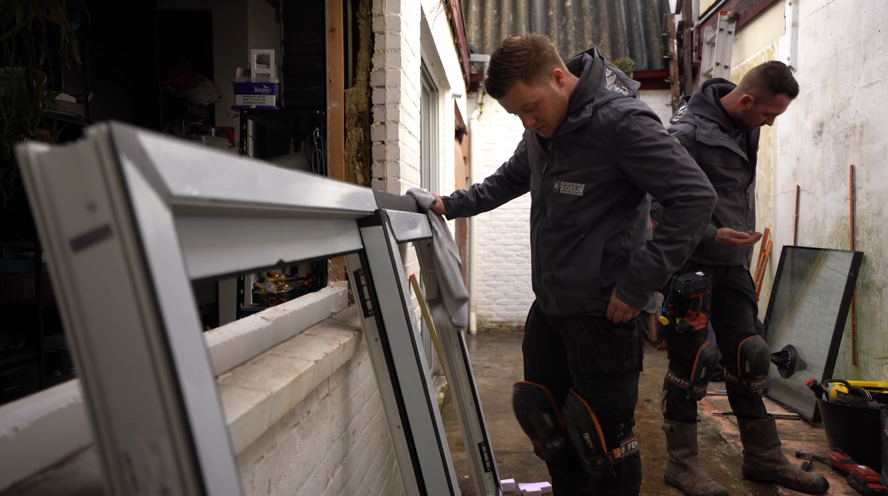
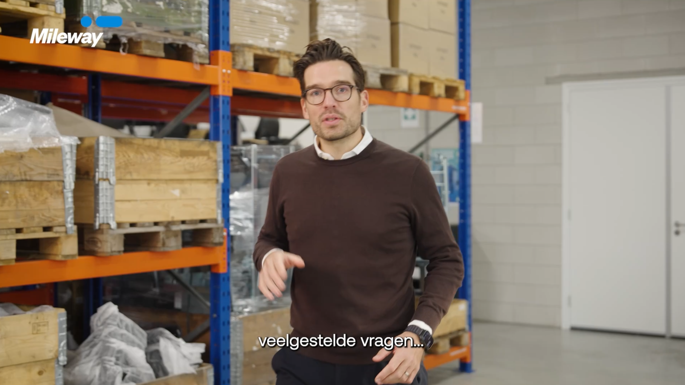

Aftermovie van Kotlin Dev Day: de energie en sfeer van de developersconferentie vastgelegd voor de volgende editie.
Een selectie uit recente producties. Elk project begon met een probleem en eindigde met resultaat. Klik op een project om de video te bekijken.

Aftermovie van Kotlin Dev Day: de energie en sfeer van de developersconferentie vastgelegd voor de volgende editie.

Aftermovie van het jaarlijkse TopsportGala, gefilmd voor gebruik in de campagne van het volgende seizoen.

Promotiefilm van de locatie zelf: zalen en faciliteiten cinematisch in beeld voor eventplanners.

Korte social content, geknipt voor doorlopende zichtbaarheid op LinkedIn en Instagram.
Voeg in de code een YouTube of Vimeo link toe aan dit project via het data-video attribuut, dan speelt de video hier automatisch af.